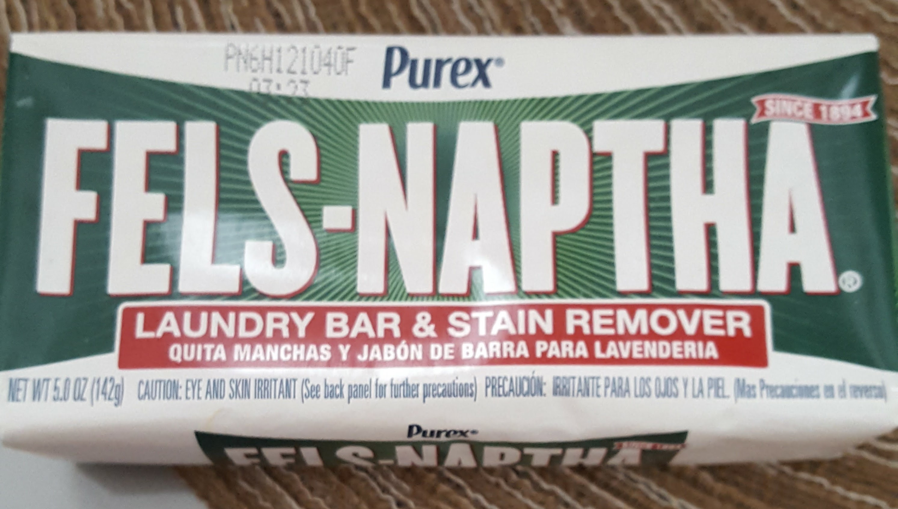
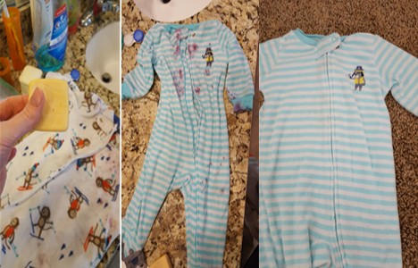
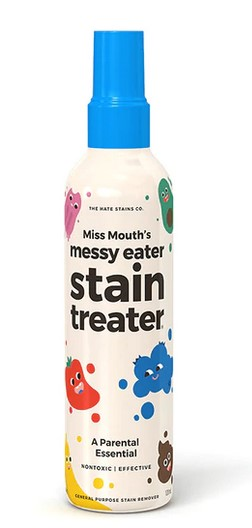
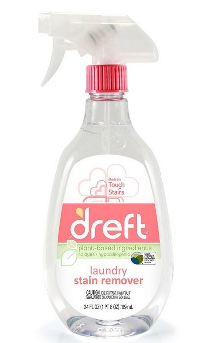

Stain Removing Tips
As a mom of soon to be three children I am always looking for ways to get food stains out of my kid’s clothes. Whether it be food stains from eating or poop stains from blow outs, I always need to get the stains out because I would hate to throw away a perfectly good outfit. We eat lots of curries as well and if you’re a mom you know that kids are messy. There are so many options out there and I have tried a lot of them but have found that just because it worked for one mom or person does not mean it is going to work for everyone. I have a few proven stain removing tips that I love to use, and I think you will love them as well.
Fels-Naptha
 One of my favorite stain removers is the Fels-Naptha bar. You can get this from Walmart for 97 cents and they last forever. I use this frequently to get out the stains and it works on almost any stain I have ever tried. It can take a little scrubbing which I will say can take a minute, but it is totally worth it.
 So, for this one you are going to put water on the stains and then scrub with the bar. I usually do this until I see some improvement in the stain. Then repeat as many times as needed until you see the stain lighten enough that you feel good about it. For different stains this can vary. If I am cleaning a blowout or even some fruit this will probably take me two times of wetting and scrubbing but if it is something like a tikka stain this could take 4 or 5 times of wetting and scrubbing. I then place in the washer, and you can use that soap of your choice. Before throwing in the dryer, I always double check that the stain has come out.
Mouth's Messy Eater Stain Treater
 My next favorite stain remover is the Miss Mouth’s messy eater stain treater. It costs 7.95 for a 4 oz bottle on amazon but it is worth getting. You also can get it from their website directly. This is a new one I found and this one makes stains completely vanish in front of your eyes. It is amazing. From strawberries to spaghetti sauce stains this thing covers them all. I would not recommend on the curry stains unless you scrub them good first as it does not get them out.
Dreft Stain Removing Spray
 Next one is the dreft stain remover spray. I usually buy this at Target or Walmart. It costs 3.99 at Target or 3.97 at Walmart. This works great as a combination with some of these or on newborn blowouts with minimal scrubbing. I use this all the time on my youngest clothes and love it. It also takes out that spit up smell really well from the burp rags if you struggle with this. This can last a while as well which I love when I can find a product like that.
All of these are fairly simple and my methods I use to get out every single stain out of our clothes. I generally use Dreft laundry soap on my kid’s clothes when washing but you can use whatever you like from your own household. I would love for you to leave me some feedback and let me know if any of these worked for you or even what your favorite stain removers are. I am always looking for good way to get the stains out.